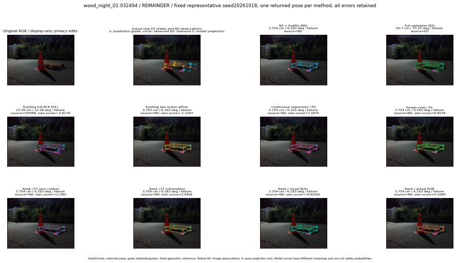

실선은 반환 자세, 초록 점선은 고정 기하 참조입니다. S는 영상 관측이 아닙니다. 점수는 모델별 의미가 다르며 보정된 안전 확률이 아닙니다. 개인정보 처리는 표시 사본에만 적용했습니다.
| 방법·seed | 위치 / 회전 / 공동성공 | 실제 출처 | 선택 후보 | 각 모델 자체 점수 |
|---|---|---|---|---|
| N0 | 3.754 cm / 6.163 deg / failure | N0 | N/A | N/A |
| E0 | 65.7 cm / 70.25 deg / failure | E0 | N/A | N/A |
| E0_REGENERATED | 65.7 cm / 70.25 deg / failure | E0 | E0_REGENERATED | N/A |
| POSEFIX_SUBPIX_PF_ANCHOR | 2.214 cm / 5.997 deg / failure | OTHER | N/A | N/A |
| POSEFIX_SUBPIX_YOLO_ANCHOR | 2.214 cm / 5.997 deg / failure | OTHER | N/A | N/A |
| D1_H1_MLP_s20261018 | 13.39 cm / 12.28 deg / failure | OTHER | WD0/ORIGINAL_WD/sample/18 | -3.917879343032837 |
| D1_H1_MLP_s20261019 | 13.39 cm / 12.28 deg / failure | OTHER | WD0/ORIGINAL_WD/sample/18 | -3.7796075344085693 |
| D1_H1_MLP_s20261020 | 13.39 cm / 12.28 deg / failure | OTHER | WD0/ORIGINAL_WD/sample/18 | -4.181830406188965 |
| D1_H1_PAIR_MLP_s20261018 | 3.754 cm / 6.163 deg / failure | N0 | N0 | -2.3092551231384277 |
| D1_H1_PAIR_MLP_s20261019 | 3.754 cm / 6.163 deg / failure | N0 | N0 | -2.3546862602233887 |
| D1_H1_PAIR_MLP_s20261020 | 3.754 cm / 6.163 deg / failure | N0 | N0 | -3.450348138809204 |
| D1_H1_PAIR_ROLE_AFFINE_s20261018 | 3.754 cm / 6.163 deg / failure | N0 | N0 | -1.1407157182693481 |
| D1_H1_PAIR_ROLE_AFFINE_s20261019 | 3.754 cm / 6.163 deg / failure | N0 | N0 | -1.4386272430419922 |
| D1_H1_PAIR_ROLE_AFFINE_s20261020 | 3.754 cm / 6.163 deg / failure | N0 | N0 | -1.1392322778701782 |
| R_CONT_F0_s20261018 | 3.754 cm / 6.163 deg / failure | N0 | N0 | 1.5874652862548828 |
| R_CONT_F0_s20261019 | 5.039 cm / 7.426 deg / failure | OTHER | WD0/ORIGINAL_WD/sample/41 | 1.6976439952850342 |
| R_CONT_F0_s20261020 | 5.039 cm / 7.426 deg / failure | OTHER | WD0/ORIGINAL_WD/sample/41 | 1.6946853399276733 |
| R_ORDER_F0_s20261018 | 3.754 cm / 6.163 deg / failure | N0 | N0 | 8.901925086975098 |
| R_ORDER_F0_s20261019 | 3.754 cm / 6.163 deg / failure | N0 | N0 | 4.595107078552246 |
| R_ORDER_F0_s20261020 | 3.754 cm / 6.163 deg / failure | N0 | N0 | -10.272035598754883 |
| R_ORDER_F1_ZERO_s20261018 | 3.754 cm / 6.163 deg / failure | N0 | N0 | 11.08206558227539 |
| R_ORDER_F1_ZERO_s20261019 | 3.754 cm / 6.163 deg / failure | N0 | N0 | 5.277423858642578 |
| R_ORDER_F1_ZERO_s20261020 | 3.754 cm / 6.163 deg / failure | N0 | N0 | 5.929274082183838 |
| R_ORDER_F1_s20261018 | 3.754 cm / 6.163 deg / failure | N0 | N0 | 3.440579414367676 |
| R_ORDER_F1_s20261019 | 3.754 cm / 6.163 deg / failure | N0 | N0 | 2.602140426635742 |
| R_ORDER_F1_s20261020 | 3.754 cm / 6.163 deg / failure | N0 | N0 | 2.8564419746398926 |
| V_ORDER_NULL_s20261018 | 3.754 cm / 6.163 deg / failure | N0 | N0 | -0.9200160503387451 |
| V_ORDER_NULL_s20261019 | 2.467 cm / 7.081 deg / failure | OTHER | WD0/ORIGINAL_WD/sample/17 | -1.1580849885940552 |
| V_ORDER_NULL_s20261020 | 3.754 cm / 6.163 deg / failure | N0 | N0 | 3.7420880794525146 |
| V_ORDER_RGB_s20261018 | 3.754 cm / 6.163 deg / failure | N0 | N0 | 4.106908798217773 |
| V_ORDER_RGB_s20261019 | 3.754 cm / 6.163 deg / failure | N0 | N0 | -1.7691105604171753 |
| V_ORDER_RGB_s20261020 | 3.754 cm / 6.163 deg / failure | N0 | N0 | -7.984236240386963 |